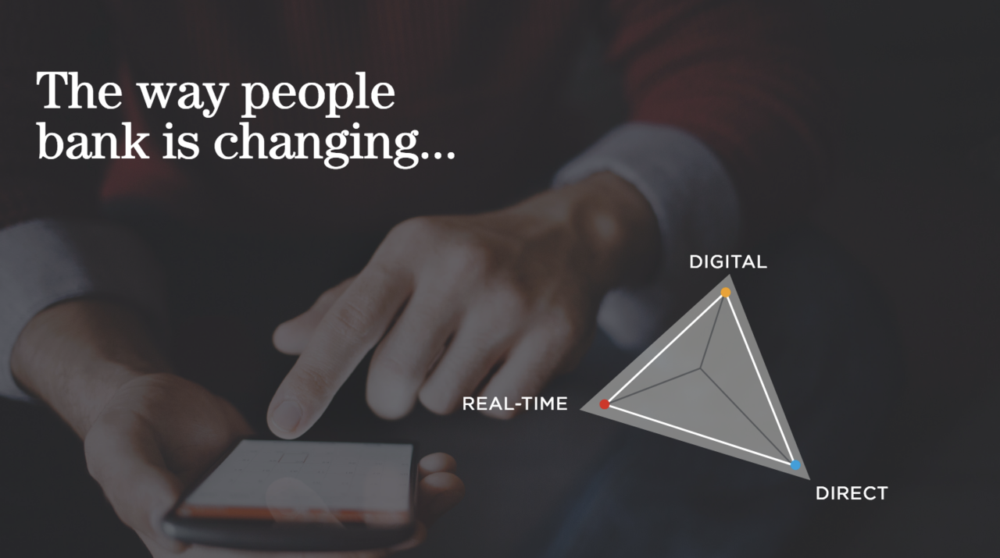
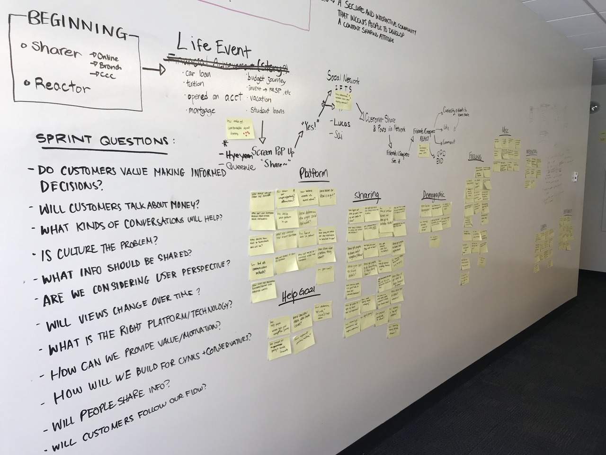
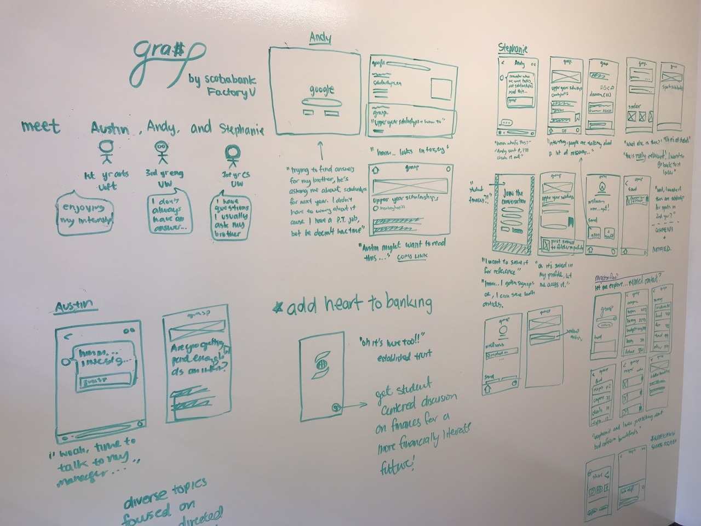
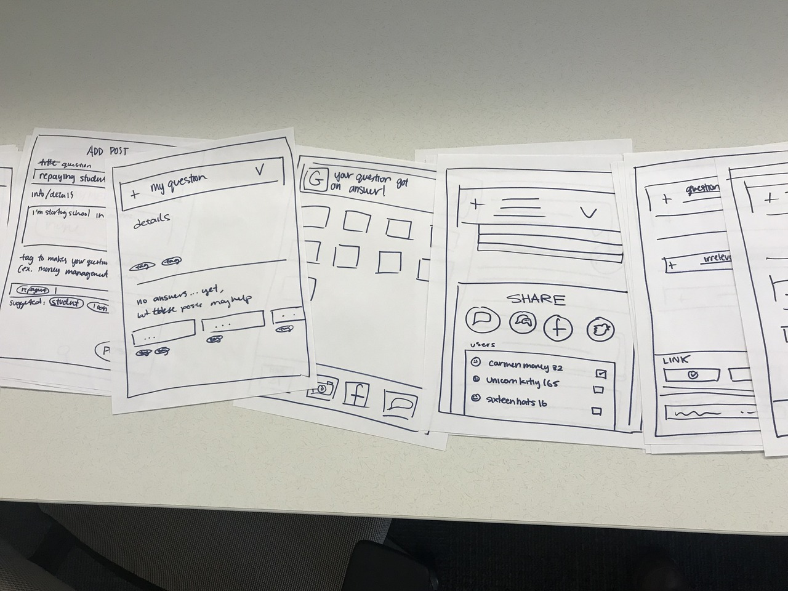
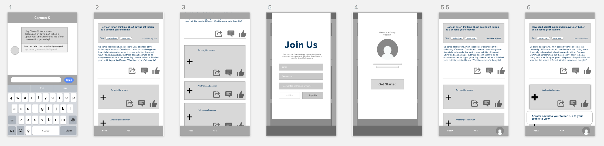
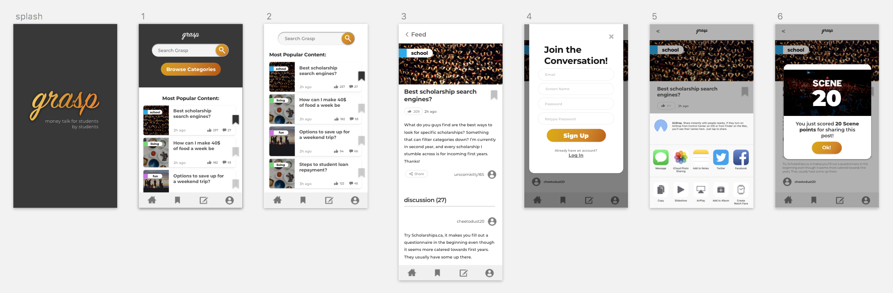
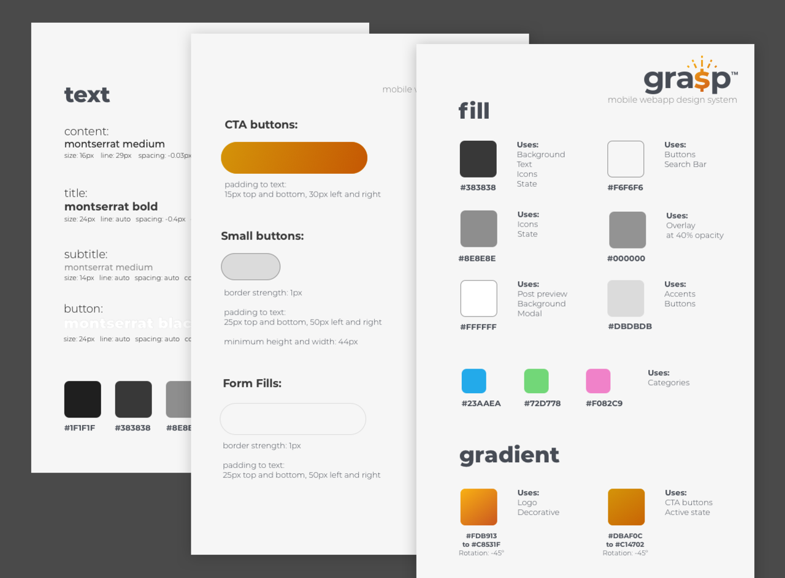
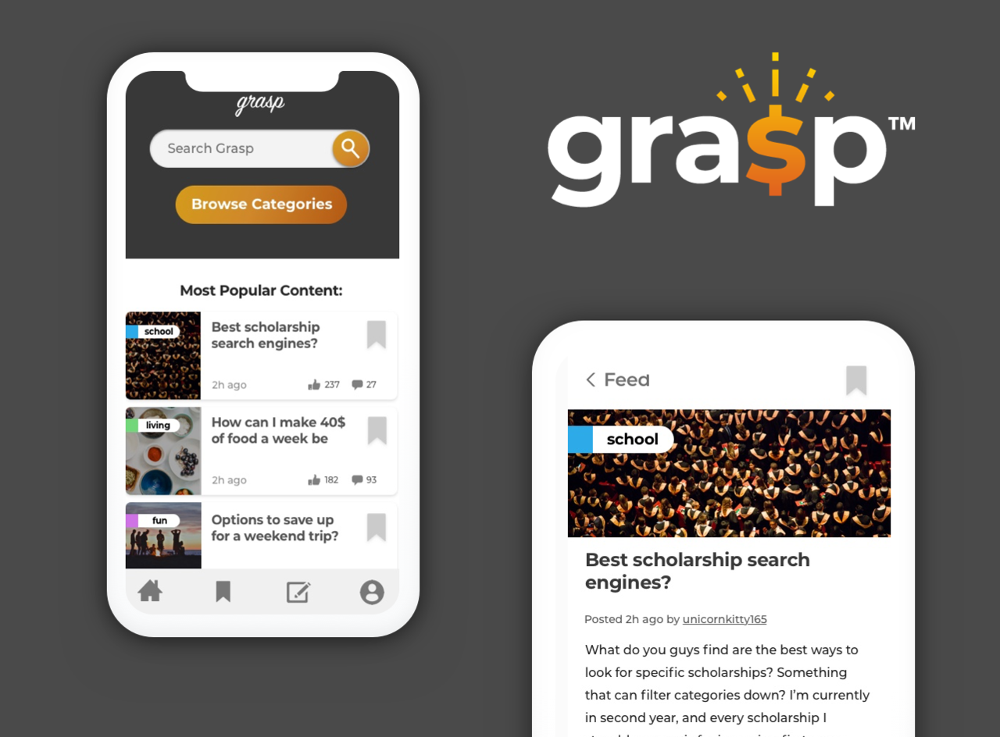

Role
At FactoryU, Scotiabank Digital Factory's newest research and experiment centre in Waterloo, ON, I was one of four co-op students on the Winter 2018 team. My role as the Product Design co-op was to tackle all things design on our four-month long project, from product strategy, to the final UI design system.
At FactoryU, we focus on being forward-thinkers of the banking industry, working on products that might come to fruition later into the future.
Problem Space
Students have lots of questions about money, but they don't talk about it.

Scotiabank Digital Banking Unit's mission statement is to make sure our customers are more well off. A certain level of financial literacy is essential to ensuring a person can make wise decisions on their money, whether it is as short term as a shopping splurge or as long term as an investment - thus becoming more well off.
Unfortunately, nearly six of 10 Canadians failed a basic financial literacy put on by lowestrates.ca (
Source), whereas the same portion of Canadians consider themselves financially literate. That doesn't sound right. The information is out there, so why aren't people accessing it?
So, how might we improve our customers' financial literacy?
User Research
Because of our relationship with the University of Waterloo and proximity to the three major post-secondary schools in the Kitchener Waterloo area, we used open ended questions to reduce bias and a large and diverse sample of surveyees, we stepped outside our hub to gather some insights from the public student population. After hearing stories upon stories, we came back and jotted down every point anyone brought up onto the walls and categorized them into topics - ranging from people's primary information source, to their perspective on banks - whether positive or cynical. Through this research, we came up with three major insights.
| Insight #1 |
Insight #2 |
Insight #3 |
| Most students fail to recognize they have any financial literacy gaps and feel their primary resource was sufficient. |
Students trust information from sources that they have an emotional connection and innate trust in. |
Information needs to easily fit with students' needs and be easy to find and understand. |
But the most prominent pattern we saw was that people were uncomfortable when talking about money, even when it was as simple as their budgeting habits. Money is taboo.
We didn't need to provide more accessible information, because nobody was going to look for it even if it was right in front of their eyes. we needed to foster a culture change, that both customers and banks can get behind.
Ideation
From social media hashtags to augmented reality powered goal setting, we brainstormed products and services that would answer our "How Might We"s. After reiterating our goal of creating a cultural shift, we knew we needed to create something that empowered our customers.
Introducing: Grasp
Grasp is a platform where students can ask difficult questions about their finances to a broad and secure community to receive the right answers fast.
With our key goal being creating a culture shift in the topic of money, we decided to create a collaboration heavy community for financial information. We chose to target the student population due to because of the time period's identity of growth and change.
The key function of Grasp was the ability for users to ask pressing questions and get their answers fast. A pattern we noticed from our user research was that students' currency in determining their trust for financial information was an emotional connection and an innate trust, be it their family, friends, professional, or the internet. By building the Grasp platform around unbiased, white labeled information and secure identities, we pull the benefits of a diverse set of answers at the same time we build trust.
The first step to building out Grasp was to determine the functions that would help us meet our mission. We determined that there must be:

the ability to see and post content
the ability to save and share content
the ability to credit/like content
the sense of community and an intrisic value for the product
extrinsic motivation for usage
Keeping the goals in mind, we ideated on save functions, potential reward systems that would show Canadian Bank's value on education, as well as making a conscious decision to create user profiles for the sake of personal security and anonymity without sacreficing credibility of the community.
Another major decision that was made was which functions were available to the public. It is important that as a product that focuses on long-term growth and interaction, we provide value to the user before we ask them to join. We provide the content to anyone who wishes to view it, and when the users themselves find the need to use advanced functions, they have established their personal value on Grasp, thus making the sign-up process less irritating.
Prototyping
With these functions in place, I began to sketch a workflow of how a user might step through screens.

Because of our structure, we stuck with a very specific and focused user story and scenario. With one screen per page, I sprawled the flow across the tables, bringing in teammates for feedback ever so often. At the roughest stage, the screens were boxes and crooked lines, but this made iteration super easy. Screens were replaced by the minute, and the steps became clearer and clearer. I snapped photos of the screens and imported them into InVision for a very rough wireframe.
With the flow finalized, it was time to add in elements that would compliment the experience. I put down my product designer cap, and put on my UIUX designer tiara.

Low Fidelity Wireframe:
I took the loose sheets of paper and tapped them into Sketch. I highlighted the functions we decided to keep, and scrapped those that didn't flow well. I wanted to play around with the layout of the posts, as well as the sizing of the features.

High Fidelity Iterations:
After getting feedback on the wireframes, I delved knees deep into more Sketch files. With the key functions in mind, I reiterated the screens multiple times in multiple files.
To white label Grasp, we stood far far away from any of the major banking colours, and stuck with gold. However, with that scheme, we ran into some accessibility issues, and toggled around with opacity and size to create an mobile optimized interface.

Final Design
While my teammates dove in databases and React.JS code, I fed them element after element, palette after palette, to create the pixel perfect MVP (minimum viable product). I also meddled around with the front-end component code with React.JS and CSS styling using SASS. But before that, I took the time to create the UI guide so that the front-end developers could easily access the assets associated with certain elements. Harder than I thought, it taught me the importance of consistency and simplicity.

Live on Pivotal Cloud Foundry (PCF), Grasp was created! Here are a couple of screens that made it to the final cut. This includes a new logo, icons, and a few pixels of movement.

I know what you're wondering - Now what? We presented our proof-of-concept (POC) to Scotiabank's Digital Factory team. Welcomed with anticipation and excitment, we were asked to provide our POC to the digital team to be built into a launchable MVP!
What's Next?
By integrating a bank-backed rewards system, the logistics and legal team need to be involved with the project. Though it is a budding idea with backed-up tech, we planted the seed in Scotiabank for the potential future of customer financial literacy.